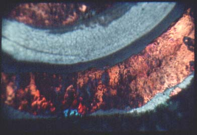
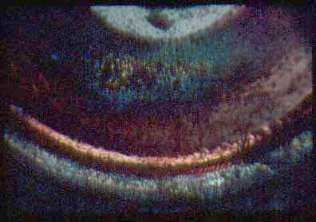
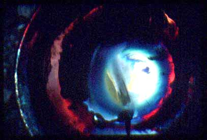
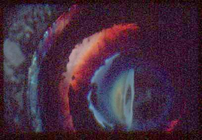
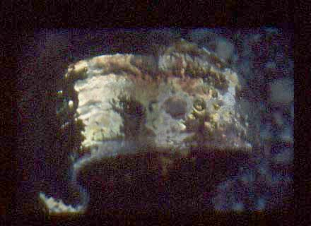
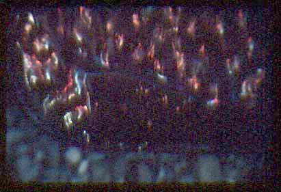

A Low Cost Tester of Glaze Melt Fluidity
A One-speed Lab or Studio Slurry Mixer
A Textbook Cone 6 Matte Glaze With Problems
Adjusting Glaze Expansion by Calculation to Solve Shivering
Alberta Slip, 20 Years of Substitution for Albany Slip
An Overview of Ceramic Stains
Are You in Control of Your Production Process?
Are Your Glazes Food Safe or are They Leachable?
Attack on Glass: Corrosion Attack Mechanisms
Ball Milling Glazes, Bodies, Engobes
Binders for Ceramic Bodies
Bringing Out the Big Guns in Craze Control: MgO (G1215U)
Can We Help You Fix a Specific Problem?
Ceramic Glazes Today
Ceramic Material Nomenclature
Ceramic Tile Clay Body Formulation
Changing Our View of Glazes
Chemistry vs. Matrix Blending to Create Glazes from Native Materials
Concentrate on One Good Glaze
Copper Red Glazes
Crazing and Bacteria: Is There a Hazard?
Crazing in Stoneware Glazes: Treating the Causes, Not the Symptoms
Creating a Non-Glaze Ceramic Slip or Engobe
Creating Your Own Budget Glaze
Crystal Glazes: Understanding the Process and Materials
Deflocculants: A Detailed Overview
Demonstrating Glaze Fit Issues to Students
Diagnosing a Casting Problem at a Sanitaryware Plant
Drying Ceramics Without Cracks
Duplicating Albany Slip
Duplicating AP Green Fireclay
Electric Hobby Kilns: What You Need to Know
Fighting the Glaze Dragon
Firing Clay Test Bars
Firing: What Happens to Ceramic Ware in a Firing Kiln
First You See It Then You Don't: Raku Glaze Stability
Fixing a glaze that does not stay in suspension
Formulating a body using clays native to your area
Formulating a Clear Glaze Compatible with Chrome-Tin Stains
Formulating a Porcelain
Formulating Ash and Native-Material Glazes
G1214M Cone 5-7 20x5 glossy transparent glaze
G1214W Cone 6 transparent glaze
G1214Z Cone 6 matte glaze
G1916M Cone 06-04 transparent glaze
Getting the Glaze Color You Want: Working With Stains
Glaze and Body Pigments and Stains in the Ceramic Tile Industry
Glaze Chemistry Basics - Formula, Analysis, Mole%, Unity
Glaze chemistry using a frit of approximate analysis
Glaze Recipes: Formulate and Make Your Own Instead
Glaze Types, Formulation and Application in the Tile Industry
Having Your Glaze Tested for Toxic Metal Release
High Gloss Glazes
Hire Us for a 3D Printing Project
How a Material Chemical Analysis is Done
How desktop INSIGHT Deals With Unity, LOI and Formula Weight
How to Find and Test Your Own Native Clays
I have always done it this way!
Inkjet Decoration of Ceramic Tiles
Is Your Fired Ware Safe?
Leaching Cone 6 Glaze Case Study
Limit Formulas and Target Formulas
Low Budget Testing of Ceramic Glazes
Make Your Own Ball Mill Stand
Making Glaze Testing Cones
Monoporosa or Single Fired Wall Tiles
Organic Matter in Clays: Detailed Overview
Outdoor Weather Resistant Ceramics
Painting Glazes Rather Than Dipping or Spraying
Particle Size Distribution of Ceramic Powders
Porcelain Tile, Vitrified Tile
Rationalizing Conflicting Opinions About Plasticity
Ravenscrag Slip is Born
Recylcing Scrap Clay
Reducing the Firing Temperature of a Glaze From Cone 10 to 6
Setting up a Clay Testing Program in Your Company or Studio
Simple Physical Testing of Clays
Single Fire Glazing
Soluble Salts in Minerals: Detailed Overview
Some Keys to Dealing With Firing Cracks
Stoneware Casting Body Recipes
Substituting Cornwall Stone
Super-Refined Terra Sigillata
The Chemistry, Physics and Manufacturing of Glaze Frits
The Effect of Glaze Fit on Fired Ware Strength
The Four Levels on Which to View Ceramic Glazes
The Majolica Earthenware Process
The Potter's Prayer
The Right Chemistry for a Cone 6 Magnesia Matte
The Trials of Being the Only Technical Person in the Club
The Whining Stops Here: A Realistic Look at Clay Bodies
Those Unlabelled Bags and Buckets
Tiles and Mosaics for Potters
Toxicity of Firebricks Used in Ovens
Trafficking in Glaze Recipes
Understanding Ceramic Materials
Understanding Ceramic Oxides
Understanding Glaze Slurry Properties
Understanding the Deflocculation Process in Slip Casting
Understanding the Terra Cotta Slip Casting Recipes In North America
Understanding Thermal Expansion in Ceramic Glazes
Unwanted Crystallization in a Cone 6 Glaze
Using Dextrin, Glycerine and CMC Gum together
Volcanic Ash
What Determines a Glaze's Firing Temperature?
What is a Mole, Checking Out the Mole
What is the Glaze Dragon?
Where do I start in understanding glazes?
Why Textbook Glazes Are So Difficult
Working with children
First You See It Then You Don't: Raku Glaze Stability
Description
Tom Buck discusses the change in color over time that can happen with some raku glazes
Article
Ceramic Review Issue #159, May/June 1996
Susan Bennett's letter in CR 149 raised questions about the raku process, specifically, the long-term stability of some fired glazes. Some lush colours changed over time into muddy browns. Why? And can such fragile glazes be made more durable? Ms Bennett might find solace knowing that she's not alone in this experience. Recently, someone wrote:
"It has come to my attention that the lively raku recipes I've been using for many years have been quietly turning from rainbow hues to brown. I am understandably upset and those who have collected my work will be as well. Asking around I have been told that this is a common problem with copper matt raku lustres (which) I have been using." The writer asked for revised recipes to overcome "this browning of the fired surface" and cited four recipes:
| Red Lustre | |
|---|---|
| Gerstley borate | 50 |
| Borax | 50 |
| Copper oxide, red | 10 |
| Iron oxide, red | 10 |
| (This a version of Tomato Red by Carol Townsend who used Paul Soldner's 50/50 base glaze). | |
| Gold Lustre | |
|---|---|
| Gerstley borate | 87 |
| Nepheline syenite | 13 |
| Tin oxide | 2.2 |
| Bismuth subnitrate | 4.4 |
| Silver nitrate | 4.4 |
| (Similar to Robert Piepenberg's Gold Lustre and related to Soldner's 80/20 base). | |
| Copper 80/20 | |
|---|---|
| Colemanite | 80 |
| Nepheline syenite | 20 |
| Copper carbonate | 10 |
| Iron oxide, red | 5 |
| (Paul Soldner is usually credited with this design although Piepenberg and others have cited similar recipes). | |
| Copper Sand | |
|---|---|
| Colemanite | 80 |
| Bone ash | 20 |
| Copper carbonate | 5 |
| Cobalt carbonate | 2.5 |
| (Another off-shoot of Soldner's 80/20 glaze). | |
Whenever a group raku-firing occurs, someone will likely be using one of the above "traditional" glaze recipes (I would not be surprised if one of them was mentioned in CR's first issue in February 1970). These glazes can excite the senses; often, they yield striking results for beginners.
The Red Lustre, suitably reduced, usually produces a streaky semi-matt glaze with some shiny areas. It shows red-mauve tones suggestive of an over-ripe tomato. The Gold Lustre, when fired at lowest possible temperature and reduced via a brief contact with the reduction medium, shows high-sheen gold flashes and sometimes streaks of matt silvery metal.
Copper 80/20, when heavily reduced, looks like freshly-minted copper. Copper Sand gives a surface like fine sandpaper with a range of mid-blue and red hues. For best results these four glazes should be applied on the thin side. I mixed test glazes at 1.5 grams per milli-litre density and brushed on one or two coats, with the occasional thicker layer for contrast. If applied too thickly some surface effects, for example, cratering, may occur because the borate minerals give off a lot of gases.
Good glass needs silica
A peek below at the Seger formulas shows why these glazes may change. They lack sufficient silica (silica, quartz, or chemically silicon oxide, SiO2) to form a durable glass. Two glazes are also deficient in alumina (aluminium oxide, Al2O3) which toughens glass and helps to seal the glass surface.
Moreover, the minerals Colemanite and Gerstley borate are the key ingredients. These minerals come to the potter with little upgrading other than grinding/sieving to a powder. For years, it was often said the two materials gave the same results when they were freely substituted for one another, gram for gram. That may not be true today since their compositions have changed. Colemanite ore from Turkey is still shipped around the world but its content of calcium borate Ca2B6O11.5H2O went from 48% boric oxide (B2O3) to today's 40% boria. In North America, Turkish colemanite ore is chiefly upgraded into a high-cost "chemical" for industrial use (glassfibre, fire-retardant). Because of cost, colemanite (ore-grade or chemical-grade) is rarely stocked nowadays by pottery supply houses in North America; they offer gerstley borate instead.
And today's gerstley borate -- a mineral-mix of colemanite, ulexite (sodium/calcium borate) and shale/limestone -- comes from California with a boron oxide (B2O3) content now at 28% (27-29%), down from the 34% (33.5-34.5%) registered in the 1970s. So, today's borate ores will, if a batch recipe is followed without adjustment, decrease the glaze's B2O3 content by 20% (perhaps more) and render the resultant glaze even more fragile. Also, if the recipe calls for Borax (hydrated sodium borate), the amount of boron oxide actually contributed to the mix could vary even further. The common form of borax, the one used mostly for washing clothes, has a chemical formula of Na2O.2B2O3.10H2O (sodium borate decahydrate). This material, if left standing about, will gain or lose moisture (H2O), hence, will undergo a change in "formula" weight and the crystal shape may also change to another form.
Many factors involved
Raku is a chancy process with many factors to control: the clay body and its ability to withstand severe thermal shock; the glaze mix, its melting temperature and the glaze's viscosity at this point; the kiln's heating rate, usually very rapid; how much and how fast volatiles, mostly inert gases, are emitted; how one determines whether and when the kiln-load is ready for removal; the speed of removal and placement in the reduction medium; and the reducing agent itself, sawdust or wood-dust, wood-chips, straw, leaves, paper, etc.
Useful here to recall the history of raku. It emerged in Japan as a quick method to make roofing tiles in an emergency and afterwards became the dominant way to make ceremonial tea bowls. The Japanese perform a "tea ceremony" that dates from antiquity; many people prefer a newly-fired simple bowl for this ritual. The early raku potters shaped a sandy earthenware clay into a bowl, coated it with glaze, red or black from iron pigments, once-fired it to temperature, removed it from the kiln and let it cool in air.
Leach launches new wave
Modern raku began after Bernard Leach returned from his sojourn in Japan 70-plus years ago and used the process at St. Ives. He also wrote about raku in A Potter's Book (pub. 1941) and thereby inspired some American potters to fast-fire their pots. These pioneers included Hal Riegger, Paul Soldner, Jean Griffith and Robert Piepenberg. Soldner is generally credited with being the first to cool the glowing pots in various organic materials. He and Piepenberg designed many of the base glazes still in use. During this experimental period, roughly 1950 to 1970, the raku potters slowly became more successful, using more refractory bodies and twice-firing the ware (bisque, then glost).
Today's raku process was developed by stoneware potters trying a new way of converting heavily-grogged clay into works of art. Moreover, they used an instinctive cut-and-try approach that led to problems, namely, good glass does not come from impure calcium borate (colemanite/ gerstley borate) and/or hydrated sodium borate (borax). Neither borate material by itself or the two together will form a long-lasting surface. Also, it takes more than 20% nepheline syenite to provide enough silica and alumina to make the glaze durable.
The four borate glazes quoted above are usually reduced in sawdust or wood-chips, etc., during which they undergo some unusual chemical reactions. These reactions, in turn, produce some complex compounds of the colourant metals and their oxides. Concurrently, these complexes become linked to oxides of iron, boron, phosphorus (when present) and aluminium. The overall result is an ultra-thin layer of coloured glass on or near the glaze surface. Unfortunately, these surface complexes are open to attack by airborne oxygen, moisture, and sulphur compounds (eg, the compounds that tarnish silver). Put simply, the reduced glaze is too porous and too easily affected by the environment.
Protect or revise?
The question remains: Do I continue to make colourful pots whose glory will fade with time (and I so advise all who collect my works)? Or, do I strive to learn of ways to revise my raku methods so as to obtain the lasting qualities of, say, majolica ware?
In Raku a personal approach (pub. 1991), Steve Branfman gives a new generation of raku potters the same "80/20" borate glaze recipes of the 1960s (with minor changes). He does, however, also list newer balanced glazes that use frits in their mix (both borate and alkaline frits).
Since most raku pieces are not meant to be functional, that is, hold water or food, a raku potter has the option to use published glazes, like those above, and follow the practice of artists working with more fragile media (oil painting, water-colour and pastel painting) -- they spray-coat the finished work to seal the colours underneath from the atmosphere. They use a clear plastic paint/varnish, usually an acrylic, that will yellow slightly with age. If raku pieces are so coated, the potter should advise potential clients to store the work in a dry, cool place beyond direct sunlight.
Or one can seek raku glazes that are more durable. Acceptable adjustments can be established in a straight-forward manner by use of Seger formulas easily calculated on a micro-computer. By converting it to a Flux Unity formula, a batch recipe is readily compared to other glazes on a fundamental or molecular level. This procedure, however, requires one to know the chemical analysis of each material used in the recipe. For glazes, each analysis cites the percentages of basic "substances", that is, the amount/proportion of each metallic oxide involved, 10 to 15 may be included. The analysis should be accurate to at least 1 part per hundred (+/- 1%, see Appendix).
Chemically, a glass may be defined by its components -- those molecules that result when oxygen and metals combine. Chemists group the molecules of component oxides in a specific order, called the Seger or unity formula. The list reflects the relative amounts (proportions) of the "flux" oxides, the amphoteric oxides, and the glass-forming oxides that fuse to form glass on the piece at temperature in the kiln. Whether the sum of the flux-oxide molecules adds up to a trillion, a billion, one hundred, or 1, the proportions of all components in the mix, one to another, remain unchanged.
Data from thousands of successful tests can then be summarized in table form, usually called Limit Formulas (Flux Unity). The table gathers the component oxides together for a given kiln temperature or temperature range. Because the table comes from successful glaze tests, it serves as a reliable guide within which to seek a particular solution to a glaze problem. From INSIGHT's Help File comes the following:
Limit Formulas (Flux Unity) for Leadless Glazes
| Temp°C | 880 | 980 | 1080 |
| Cone | 012 | 08-05 | 04-02 |
| Calcium ox. CaO | 0.1-.4 | .15-.5 | 0.1-.6 |
| Magnesium ox. MgO | 0-.1 | 0-.15 | 0-.3 |
| Alkali oxides* | 0.25-.5 | 0.25-.5 | 0-.5 |
| Barium ox. BaO** | 0-.1 | 0-.2 | 0-.3 |
| Zinc oxide ZnO | 0-.05 | 0-.15 | 0-.2 |
| Boron ox. B2O3 | 0.8-1.5 | 0.6-1.3 | 0.3-1.1 |
| Alum. ox. Al2O3 | 0.1-.15 | 0.1-.25 | 0.1-.4 |
| Silicon ox. SiO2 | 1.25-2.0 | 1.5-2.5 | 1.5-3.0 |
| *Oxides of potassium(K), sodium(Na), and sometimes lithium(Li). **Or Strontium oxide SrO. | |||
The table allows new or revised glazes to be calculated by linking the basic or essential oxides to raw materials available to the potter. One needs some practice to make a scratch recipe. For example, let's design "My Raku Base Glaze" to melt at approximately 900°C (1650°F, cone 011); it will have the following Seger chosen from the Limits table, using past experience as a guide:
| My Raku Base Glaze | |||||
|---|---|---|---|---|---|
| Flux oxides | Amphoteric ox. | Glass-formers | |||
| CaO | 0.4 | B2O3 | 1.1 | SiO2 | 1.3 |
| MgO | 0.1 | Al2O3 | 0.12 | ||
| KNaO | 0.5 | ||||
(Magnesium oxide, a high-temperature flux, 1200°C or more,
will help give this glaze a broader range during which melting will occur).
By use of the Insight computer program or similar system, the Seger calculations are carried out automatically. The computer sums the first column of flux oxides. Then, the proportions of other oxides are determined by using the original flux-oxide total as divisor (denominator). These calculations yield the Seger/Flux Unity formula. Boron oxide B2O3 is sometimes placed under the glass-formers heading as in UK and Europe and sometimes it is found in the amphoteric column as in North America. This reflects the behaviour of the amphoteric oxides, iron, Fe2O3, boron, B2O3, aluminium, Al2O3; they may have a dual role, flux and glass-former, in a given glaze mix.
The Seger formula is made easier to interpret by choosing the flux-oxide total as 1 (unity), with the other amounts of components calculated accordingly. One can regard the Seger formula as a re-arrangement of the glaze's chemical composition expressed in mole percent, that is, the number of molecular weights of each basic oxide expressed as a percentage of the total combination). When it is expressed in mole percent (mol%), the amount of each component will, by itself, be less than unity.
Often, composition is stated in parts by weight of the basic oxides in the mix. For example, Red Lustre glaze has this parts-by-weight composition (copper oxide excluded):
| Red Lustre | |
|---|---|
| Calcium oxide, CaO | 13.0% |
| Magnesium oxide, MgO | 2.5% |
| Sodium oxide, Na2O | 15.1% |
| Iron oxide, red, Fe2O3 | 14.9% |
| Boron oxide, B2O3 | 46.6% |
| Aluminium oxide, Al2O3 | 0.9% |
| Silicon oxide, SiO2 | 7.0% |
This type of analysis shows the low levels of alumina and silica. But it leaves open the questions: How much silica and alumina should be added? Using what raw materials?
Finding the batch recipe
To arrive at a batch recipe of My Raku Base Glaze, one enters data into the Insight program and conducts the "Supply Oxide" routine. For this Seger formula, a major restriction is imposed by the B2O3 content, 1.1 molecular weights, which demands use of raw materials high in B2O3. These include: borax, boracic acid (orthoboric acid, H3BO3), gerstley borate, borate frits, and colemanite as available. The computer program will lead to many recipes that match the Seger of My Raku Base Glaze. I have chosen the following four):
| My Raku Base Glaze #1 | |
|---|---|
| Borax (as 10H2O) | 43 |
| Gerstley borate | 34 |
| Silica | 15 |
| Grolleg kaolin | 8 |
| My Raku Base Glaze #2 | |
|---|---|
| Gerstley borate | 43 |
| Silica | 19 |
| Soda ash | 15 |
| Boracic acid* | 13 |
| Grolleg kaolin | 10 |
*Chief form of this material is orthoboric acid (or boric acid), H3BO3, molecular weight 61.83, although it has two other forms, metaboric acid, HBO2, molecular weight 43.82, and tetraboric (pyroboric) acid, H2B4O7, molecular weight 157.26.
Because water dissolves borax decahydrate, boracic acid, and soda ash when the glaze is first mixed, it is best to fresh-mix these recipes just before application to the biscuit. Otherwise, on standing for a week or more, some sodium borate (borax) and/or sodium carbonate (soda ash) may come out of solution as rather large crystals making the glaze dispersion non-uniform. If one's work demands an "on-hand" supply of Base #1, one can use a methanol-water mix (3:2 by volume) to keep borax suspended. This does, however, add another hazard to one's studio since methanol (methyl alcohol, wood spirits, gasline antifreeze) is combustible and toxic. Base #2 should be fresh-mixed since boracic acid is soluble in methanol/water, and may lead to crystals on standing.
| My Raku Base Glaze #3 | |
|---|---|
| Gerstley borate | 45 |
| Ferro frit 3185 | 29.5 |
| Pemco frit 2201 | 15.5 |
| Grolleg kaolin | 10 |
(Please note that gerstley borate is slightly soluble, moreso in hot water, and will cause problems, the glaze will "floc", i.e., form a massive clump).
| My Raku Base Glaze #4 | |
|---|---|
| Pemco frit 2201 | 54 |
| Pot.-crafts P2957 | 27.5 |
| Ferro frit 3185 | 12 |
| Ferro frit 3819 | 6.5 |
If one can find a source of these frits and mix either #3 or #4, all the components would be insoluble in water and the glaze would have a long shelf life. Where a specific frit isn't available, a substitute may be possible using a local frit whose analysis is known; the Insight program allows one to match Seger formulas by addition of common materials. For example, PC P2960 frit can be matched by using FF3195 + quartz/silica + kaolin. And in many cases, a UK frit may replace a US frit.
The objective for My Raku Base Glaze is to mix a glaze that will melt at approximately 900oC, one that will serve as a conduit for some colourants, and a glaze that will be stable long-term. Moreover, each recipe cited above is exactly like the other three recipes on a molecular level, that is, each will produce precisely the same mix of basic oxides when fusion occurs on a piece of pottery in a kiln at temperature. This holds true as long as the composition or analyses of the components remain steady over time.
Revising the recipes
The method used to design My Raku Base Glaze will also work to revise other glazes. However, one should note that the Limits table cites the minimum amounts of Al2O3 and SiO2 for each temperature range at which a glaze melt occurs. And that less B2O3 is required as the temperature rises. Also, that there is narrow range in which the common flux oxides, the first five items in the table above, add up to unity. There will be, moreover, some successful glaze mixes that lie outside the flux-unity table--the glaze melt will be, in part, fluxed by the changelings (oxides of iron Fe2O3, boron B2O3 and aluminium Al2O3) and sometimes by the colourant oxides when they are present in significant amounts (5% or more).
If glazes are mixed using today's materials the four batch recipes (see above) will produce the following formulas:
| Red Lustre | |||||
|---|---|---|---|---|---|
| Flux oxides | Amphoterics | Glass-formers | |||
| CaO | 0.43 | Fe2O3 | 0.17 | SiO2 | 0.22 |
| MgO | 0.12 | B2O3 | 1.25 | ||
| Na2O | 0.45 | Al2O3 | 0.02 | ||
(plus colourant Cu2O, 0.10, which will likely lower the fusion point).
| Gold Lustre | |||||
|---|---|---|---|---|---|
| Flux oxides | Amphoterics | Glass-formers | |||
| CaO | 0.62 | B2O3 | 0.79 | SiO2 | 0.61 |
| MgO | 0.17 | Al2O3 | 0.09 | ||
| Na2O | 0.21 | ||||
(colourants may help flux the glaze).
| Copper 80/20 | |||||
|---|---|---|---|---|---|
| Flux oxides | Amphoterics | Glass-formers | |||
| CaO | 0.82 | Fe2O3 | .07 | SiO2 | .59 |
| MgO | 0.08 | B2O3 | 1.13 | ||
| Na2O | 0.10 | Al2O3 | .11 | ||
| (copper colourant will also flux the glaze). | |||||
| Copper Sand | |||||
|---|---|---|---|---|---|
| Flux oxides | Amphoterics | Glass-formers | |||
| CaO | 0.95 | P2O5 | 0.10 | SiO2 | 0.10 |
| MgO | 0.04 | B2O3 | 0.84 | ||
| Na2O | 0.01 | Al2O3 | 0.01 | ||
| (colourants will serve as fluxes too) | |||||
By comparing a recipe's Seger to data in the Limits table, and using the computer again, one can determine a revised recipe for a durable glaze melting at temperatures used in most raku firings. Then, one tests the new glaze to verify that the new mix will produce a result similar to that of the fragile glaze. Some fine-tuning will likely be needed since materials often have analyses that differ somewhat from those cited in the Appendix.
The Limits table says that lustres, to be durable and melt at approximately 900°C, should have Seger formulas that list alumina as 0.1 to 0.15 and silica as 1.25 or more. Following the procedure used above (for My Raku Base Glaze) the Seger formula of the Red Lustre glaze is targeted at:
| Flux oxides | Amphoterics | Glass-formers | |||
|---|---|---|---|---|---|
| CaO | 0.40 | Fe2O3 | 0.16 | SiO2 | 1.25 |
| MgO | 0.11 | B2O3 | 1.14 | ||
| Na2O | 0.49 | Al2O3 | 0.10 | ||
The other lustres, when revised, show similar Seger formulas, although the amounts of CaO, Na2O, Fe2O3 and B2O3 may differ.
Once converted into a batch recipe via the computer, this Red Lustre glaze will likely be molten at approximately 900°C, and therefore undergo reduction with results similar to the original recipe. Depending on the materials used, many batch recipes are feasible, all of them are equivalent except where noted. They include:
| Red Lustre (revised) #1: | |
|---|---|
| Borax (decahydrate) | 50 |
| Gerstley borate | 50 |
| Silica | 17 |
| Nepheline syenite | 15 |
| Copper oxide, red | 10 |
| Iron oxide, red | 10 |
This version, by adding to the base mix, changes the colourants to approximately 7.5%. (Note: The Canadian and S. African syenites show slight differences, see Appendix; however, these differences are usually not enough to affect the glaze mix produced by a typical studio weighing).
| Red Lustre #2: | |
|---|---|
| Borax (decahydrate) | 38 |
| Gerstley borate | 38 |
| Silica | 12.5 |
| Nepheline syenite | 11.5 |
| Copper oxide, red | 10 |
| Iron oxide, red | 10 |
This version keeps the copper and iron oxides at their original percentages.
One can obtain a water-insoluble Red Lustre if one obtains one or more borate frits:
| Red Lustre #3: | |
|---|---|
| Frit Ferro 3819 | 50 |
| Gerstley borate | 50 |
| Copper oxide, red | 10 |
| Iron oxide, red | 10 |
This simple mix suffers from the inherent limitations of the base's two main ingredients; they work at cross-purposes. As a result, this mix is a compromise with lower boria (0.82) higher alumina (0.17) than called for in the Seger above. Thus, it may melt at 950oC or higher and on some bodies it may yield a matt glaze rather than a high-sheen gloss.
Other frits, borate or alkaline, can replace borax and perhaps gerstley borate too. However, to be able to calculate the new batch mix one needs a reliable analysis of the frit, weight percent or mole percent. Emmanuel Cooper cites analyses for two Potterycrafts frits, P2957 (borate) and P2962 (alkaline), see Appendix. These frits yield:
| Red Lustre #4: | |
|---|---|
| Borax (decahydrate) | 37 |
| Potterycrafts P2957 | 33 |
| Gerstley borate | 30 |
| Copper oxide, red | 10 |
| Iron oxide, red | 10 |
| Red Lustre #5: | |
|---|---|
| Borax (decahydrate) | 40 |
| Gerstley borate | 27 |
| Potterycrafts P2962 | 17 |
| Silica | 10 |
| Grolleg kaolin | 6 |
| Copper oxide, red | 10 |
| Iron oxide, red | 10 |
Like the first two revised recipes, these (#4 & #5) should be fresh-mixed just before being applied to ware. This also applies to the following batches that include frit Ferro 3185, Ferro 3278, Pemco P830, or Hommel K3. The new batch recipes would be:
| Red Lustre #6: | |
|---|---|
| Gerstley borate | 40 |
| Frit F3185 | 27 |
| Borax (decahydrate) | 25 |
| Grolleg kaolin | 8 |
| Copper oxide, red | 10 |
| Iron oxide, red | 10 |
| Red Lustre #7: | |
|---|---|
| Borax (decahydrate) | 35 |
| Frit F3278/P830/K3 | 34 |
| Gerstley borate | 23 |
| Grolleg kaolin | 8 |
| Copper oxide, red | 10 |
| Iron oxide, red | 10 |
The borate frits 3185 and 3278 have too much silica content to permit them to substitute greatly for borax and/or gerstley borate without increasing the firing temperature significantly. Version #7 (with F3278) was mixed and tested; it produced an easily-melted glaze that, when heavily reduced, gave brilliant reds and blues with high gloss.
Another possible recipe, insoluble, is one that uses Ferro frits 3134 and 3195, namely:
| Red Lustre #8: | |
|---|---|
| Gerstley borate | 38 |
| Frit F3134 | 31 |
| Frit F3195 | 31 |
| Copper oxide, red | 10 |
| Iron oxide, red | 10 |
This version (boria 0.82) was mixed and fired, yielding an excellent semi-matt lustre.
And finally, if Pemco frit 2201 (Fusion F309) is available, it will yield a simple, insoluble batch mix:
| Red Lustre #9: | |
|---|---|
| Frit P2201 | 57 |
| Potterycrafts P2957 | 43 |
| Iron oxide, red | 13 |
| Copper oxide, red | 10 |
Of these nine replacement recipes, Nos. 2, 4, 7, and 9 come closest to reproducing the original Seger formula with appropriate increases in alumina and silica. And for some raku potters, Nos. 3, 5, and 8 may prove to be more attractive.
Gold Lustre
This glaze exhibits low silica, low boria, and high CaO/MgO content, and is beyond the usual limits for 900oC. However, if the silica is brought to 1.25 units, the glaze will become more durable and the mix insoluble in water. The first revision achieves this:
| Gold Lustre revised #1 | |
|---|---|
| Gerstley borate | 74 |
| Silica | 14 |
| Nepheline syenite | 12 |
| Bismuth subnitrate | 4 |
| Silver nitrate | 4 |
This version was mixed and tested, using newspaper to provide a gentle reduction. The pot's colour was right but the gloss surface was marred by excessive bubbling, a result of the glaze coat being too thick.
A second version makes use of a frit:
| Gold Lustre #2 | |
|---|---|
| Gerstley borate | 60 |
| Potterycrafts P2957 | 40 |
| Tin oxide | 2 |
| Bismuth subnitrate | 4 |
| Silver nitrate | 4 |
Both Nos. 1 & 2 match the original glaze with more silica added. For more venturesome potters, the literature offers two unusual Gold Lustres, one higher fire, the other a crackle type:
| Gold Lustre #3 | |
|---|---|
| Gerstley borate | 50 |
| Grolleg kaolin | 33 |
| Silica | 17 |
| Silver nitrate | 1.7 |
(Attributed to Tony Mecham, it has too much alumina for 900oC).
| Gold Lustre #4 | |
|---|---|
| Silica | 32 |
| Gerstley borate | 26 |
| Soda ash | 22 |
| Grolleg kaolin | 12 |
| Borax (decahydrate) | 8 |
| Bismuth subnitrate | 1 |
| Silver nitrate | 1 |
(Tyler & Hirsch, in "Raku", say this crackle glaze will yield iridescent highlights. It works best when fresh-mixed).
The Gold lustres are both expensive and troublesome. They need a potter's full attention since silver nitrate is a hazardous chemical. Also, there is a limited dwell-time in a hot kiln before the bismuth and silver nitrates break down and evaporate off the piece. Moreover, if a pot is too heavily reduced, it may lose its gold metallic sheen.
Copper 80/20 Glaze
This high calcium oxide, high boron oxide glaze also lacks silica. If one can obtain colemanite locally then a simple addition of silica, approximately 17%, to the base recipe will provide a stable glaze. However, the percentages of the colourants in the mix will drop slightly. To keep them the same the recipe is revised to:
| Copper 80/20 revised #1 | |
|---|---|
| Colemanite | 65 |
| Nepheline syenite | 16 |
| Silica | 15 |
| Copper carbonate | 10 |
| Iron oxide, red | 5 |
This glaze-mix uses insolubles so it can be on the shelf. However, if colemanite is not available as is quite common, then one can use gerstley borate (recipe #2) or a mix of gerstley borate and borax (recipe #3) and fresh-mix the glaze just before use. The revised glaze is:
| Copper 80/20 #2 | |
|---|---|
| Gerstley borate | 73 |
| Nepheline syenite | 13.5 |
| Silica | 13.5 |
| Copper carbonate | 10 |
| Iron oxide, red | 5 |
| Copper 80/20 #3 | |
|---|---|
| Borax (decahydrate) | 39 |
| Gerstley borate | 37 |
| Nepheline syenite | 12 |
| Silica | 12 |
| Copper carbonate | 10 |
| Iron oxide, red | 5 |
The No. 3 mix contains much more sodium oxide which leads to a large increase in the expansion/contraction of the glaze, about one-third more, and the glaze may crackle on some bodies instead of providing a smooth surface.
Another simple version of Copper 80/20 uses Potterycrafts frit P2957 for an insoluble mix, as follows:
| Copper 80/20 #4 | |
|---|---|
| Gerstley borate | 64 |
| Potterycrafts P2957 | 36 |
| Copper carbonate | 10 |
| Iron oxide, red | 5 |
or this version using Pemco frit 2201 to replace gerstley borate:
| Copper 80/20 #5 | |
|---|---|
| Pemco frit 2201 | 64 |
| Potterycrafts P2957 | 14 |
| Nepheline syenite | 11 |
| Silica | 11 |
| Copper carbonate | 10 |
| Iron oxide, red | 5 |
Other batch recipes can be calculated for the Copper 80/20 glaze to use various frits including Ferro frits 3195, 3185 and 3819. An example is the following:
| Copper 80/20 #6 | |
|---|---|
| Gerstley borate | 67 |
| Ferro frit 3195 | 17 |
| Silica | 10 |
| Kaolin | 6 |
| Copper carbonate | 10 |
| Iron oxide, red | 5 |
I have mixed and tested this batch recipe with excellent results. The Copper 80/20 glaze, as revised, is an easy glaze to use since it has an adequately broad melting range and doesn't run, hence, over-firing is not a problem. Also, reduction can be heavy and lengthy and still yield a bright copper metal finish.
Copper Sand
The Copper Sand recipe is quite difficult to adjust because 1) the textured surface is a direct result of too much calcium phosphate (bone ash) in the mix. Phosphorus oxide competes with alumina and boria in the formation of silica-based glass; and 2) The original mix lacks alumina and silica.
To achieve a stable glaze, one revises the Seger to match the firing temperature and then calculates a new batch recipe. To this mix one adds matting/texturing agents to open up a way to achieve both the reduction colours and the desired surface without weakening the glass. Possible versions include:
| Copper Sand (revised) #1 | |
|---|---|
| Gerstley borate | 32 |
| Borax (decahydrate) | 30 |
| Bone ash | 11 |
| Silica | 18.5 |
| Grolleg kaolin | 8.5 |
| Copper carbonate | 5 |
| Cobalt oxide | 2.5 |
Recipe #1 should be fresh mixed just before use whereas Nos. 2, 3 and 4 below could be on hand since the components are insoluble.
| Copper Sand #2 | |
|---|---|
| Gerstley borate | 56 |
| Silica | 21 |
| Bone ash | 14 |
| Grolleg kaolin | 9 |
| Copper carbonate | 5 |
| Cobalt oxide | 2.5 |
| Copper Sand #3 | |
|---|---|
| Ferro frit 3195 | 63 |
| Gerstley borate | 20 |
| Bone ash | 14.5 |
| Talc | 2.5 |
| Copper carbonate | 5 |
| Cobalt oxide | 2.5 |
This batch (No. 3) was mixed and tested twice. The first mix contained 5% zirconium spinel, tested, and then 2% alumina hydrate was added and retested. The mix did not reproduce the original dry finish when using 5% spinel as matting agent but rather yielded a semi-matt to glossy finish. The second test gave a more matt surface with glossy glints.
| Copper Sand #4 | |
|---|---|
| Gerstley borate | 43 |
| Potterycrafts P2957 | 39 |
| Bone ash | 14 |
| Silica | 4 |
| Copper carbonate | 5 |
| Cobalt oxide | 2.5 |
There are several matting/texturing agents worth trying:
Colourless zirconium/zinc spinel, add 5%, or more;
Other spinels (usually coloured), 3%, more or less;
Molochite (fired china clay, finely ground), or aluminium hydrate powder, 50 to 60 mesh, 2 to 5%; and
Kyanite, 35, 50 or 100 mesh, 3%, more or less.
As available in North America, zirconium spinel is a very fine crystalline powder that melts at very high temperature, above 1500oC, and will not likely become an active glaze component until 1300°C. In a raku firing, the tiny crystals likely remain inert and float/disperse in the molten glaze; on cooling, the glaze will have a satin matt surface that doesn't hide the colour complexes.
A natural, coloured spinel (those containing iron, zinc, chromium or manganese), if available locally, will likely behave in a similar fashion (I have yet to try such a spinel).
Molochite (Al2O3.2SiO2), kyanite (Al2O3.SiO2) and aluminium hydrate are available as crystalline powders that melt above 1300°C. Either one will provide a matt surface but will also hide the reduction colours if too much is used.
When using matting and texturing agents in a glaze mix, a successful result will increasingly depend how one fires and to what temperature; and also how quickly the pot is placed in reducing medium since the glaze must be molten to produce red from copper. On some bodies, the best result may come from a combination of agents.
Final note: Raku potters face a difficult task of making durable pots, especially when using high-borate, low-silica glazes. This article offers revisions to matt lustre glazes, and while I have not yet tested all the suggested revisions, I have formulated and tested at least one mix apiece of the above four glazes, with some success. Yet, the recipes above should be approached with hope and caution -- whatever the result, may we all gain a better understanding of glaze chemistry and how it may be successfully applied to practical problems.
Acknowledgements: Thanks to: Darlene Benner, fellow Guild member and raku artist, for firing up her kiln to help test the new glaze mixes; Tony Hansen, of Digitalfire Corp., Medicine Hat, Alberta, for permission to quote Insight's Limits Table and also for converting my original text into a form readable by Ceramic Review's computer(s); and Carol Desoer, my daughter, for photographing the test pots.
Appendix
Materials used for calculations have the following chemical composition, expressed in moles (number of molecular weights) and arranged so that the flux oxides quantities, where applicable, add up to unity:
| Material | Mol. Wt. or Formula Wt. | Seger formula |
| Bone ash | 99.4 | CaO-0.96, MgO-0.03, Na2O-0.01, P2O5-0.30, Al2O3-0.01, SiO2-0.01 |
| Borax 10H2O | 381.5 | Na2O-1.00, B2O3-2.00 |
| Boric acid (boracic acid) | 61.8 | B2O3-1.00 |
| Colemanite | 197.9 | CaO-0.91, MgO-0.09, K2O 0.01, B2O3-1.26, Al2O3-0.01, SiO2-0.15 |
| Ferro 3134 | 190.6 | CaO-0.68, Na2O-0.32, B2O3-0.63, SiO2-1.48 |
| Ferro 3185 | 807.2 | Na2O-1.00, B2O3-4.42, SiO2-7.26 |
| Ferro 3195 | 337.4 | CaO-0.67, Na2O-0.33, B2O3-1.11, Al2O3-0.41, SiO2-2.67 |
| Ferro 3278 | 270.4 | CaO-0.33, Na2O-0.67, B2O3-0.84, SiO2-2.53 |
| Ferro 3819 | 329.2 | CaO-0.02, K2O-0.25, Na2O-0.69, ZnO-0.04, B2O3-0.79, Al2O3-0.41, SiO2-2.62 |
| Silica | 60.0 | SiO2-1.00 |
| Gerst.borate | 206.9 | CaO-0.66, MgO-0.18, Na2O-0.16, B2O3-0.84, Al2O3-0.03, SiO2-0.34 |
| Grolleg kao. | 274.2 | MgO-0.02, K2O-0.06, Fe2O3-0.01, Al2O3-1.00, SiO2-2.18 |
| Neph.Sy.1, Canada | 446.4 | CaO-0.06, MgO-0.01, K2O-0.22, Na2O-0.71, Al2O3-1.04, SiO2-4.53 |
| Neph.Sy.2, S.Africa | 475.6 | K2O-0.24, Na2O-0.76, Al2O3-1.11, SiO2-4.88 |
| Pemco 2201 (Fusion 309) | 160.1 | CaO-0.63, MgO-0.19, Na2O-0.18, B2O3-1.18, Al2O3-0.02, SiO2-0.35 |
| P2957, Potterycrafts | 455.2 | CaO-0.60, K2O-0.14, Na2O-0.26, B2O3-0.97, Al2O3-0.42, SiO2-4.70 |
| P2962, Potterycrafts | 188.3 | BaO-0.11, CaO-0.11, K2O-0.21, Na2O-0.58, B2O3-0.11, Al2O3-0.09, SiO2-1.65 |
| Soda ash | 107.0 | Na2O-1.00 |
Zirconium/zinc spinel
The molar formula (alumina unity) for zirconium/zinc spinel is: Al2O3, 1.00; SiO2, 1.77; ZrO2, 1.69; ZnO, 1.25; and a trace of TiO2, 0.01--formula weight, 519.3.
Book list / references
- Cooper's book of glaze recipes, E. Cooper, Batsford, London, 1987.
- Raku, C. Tyler & R. Hirsch, Watson-Guptill, New York, 1975.
- Raku, art & technique, H. Riegger, Van Nostrand Reinhold, New York, 1970.
- Raku pottery, R. E. Piepenberg, Macmillan, New York, 1972.
- Raku, a practical approach, S. Branfman, Chilton, Radnor, Pa, 1991.
- The Potter's Friend, F. Hamer, article in CR 146, Pp 8-13, 1994.
- The Magic of Fire, T. Hansen, Digitalfire Corp., Medicine Hat, Ab, Canada, 1992.
- FORESIGHT (beta) and INSIGHT ver 4.1k.
Comments
I'm trying a simple glaze based on 3110 but using sodium hydroxide instead of soda ash. The substitution ratio is around 8 - 10 so you use less NaOH and it is totally soluble. This way I can increase the silica content and get a more stable glaze without the problems of crystals with soda ash. I wonder if there is a rapid test for rake to see if the luster will fade. Obviously it is oxidizing so how about some warm hydrogen peroxide? If the color stays perhaps the glaze is stable? Steve Baxter
Related Information

This picture has its own page with more detail, click here to see it.
80/20 lustre glaze

This picture has its own page with more detail, click here to see it.
Copper sand/copper 80/20 glaze

This picture has its own page with more detail, click here to see it.
Glossy red lustre glaze #2

This picture has its own page with more detail, click here to see it.
Glossy red lustre glaze #1

This picture has its own page with more detail, click here to see it.
Gold lustre glaze

This picture has its own page with more detail, click here to see it.
Matt red lustre glaze
Links
 PayPal | No tracking, No ads, No paywall, No transient content! Just organized, concise information constantly updated and improved. Was this helpful? Consider supporting me. |
By Tom Buck
Got a Question?
Buy me a coffee and we can talk 

https://digitalfire.com, All Rights Reserved
Privacy Policy